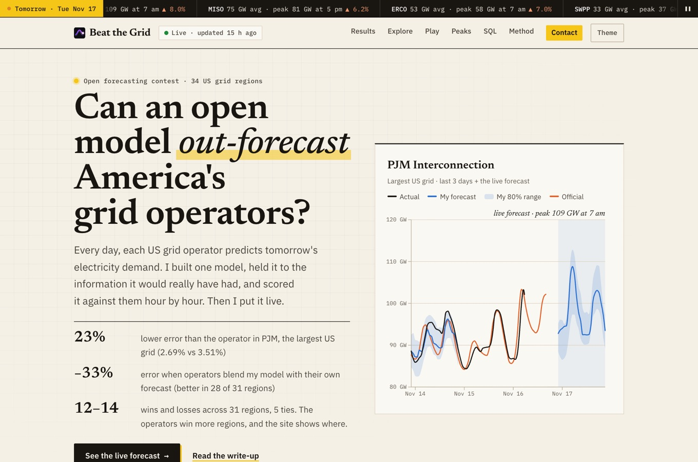

Data analysis · Python · SQL · statistics
Maxwell Liston
Data projects built on real public data, with the method, the code, and the results that didn't go my way, all in the open.
01 Featured project

 Beat the Grid
Beat the Grid
Can one open model out-forecast America's grid operators? A fair, walk-forward contest across 34 US grid regions, now running live: a new forecast is published every day before the day begins. You can even try to beat the model yourself.
- Python · LightGBM
- SQL in the browser (DuckDB)
- Significance testing
- Live on GitHub Actions
- D3.js
02 More projects
- GA4 checkout funnelE-commerce funnel, attribution and tracking-gap analysis on Google Analytics 4 data (BigQuery, DuckDB, Python, Streamlit).
- LoanFlow operations analytics1.2M loan events: SQL reporting, process analysis in Python, and an interactive dashboard.
- ClaimScope insurance analytics677,991 real policies: exposure-aware SQL reporting and a held-out Poisson benchmark.
- SpendScope procurement analyticsPublic procurement data with SQL, Python and R: supplier validation and uncertainty analysis.
- Subscription retention analyticsRecurring revenue, churn and retention analysis with SQL and Python (synthetic data).
- Checkout A/B test analysisEnd-to-end experiment readout with SQL and Python (simulated data).